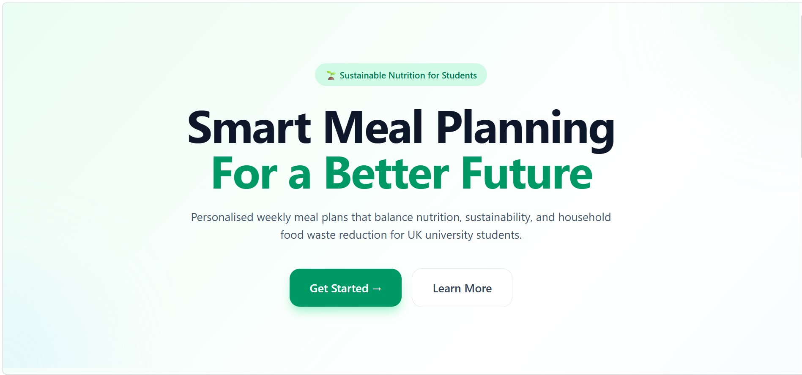

BSc (Hons) Computing Dissertation Artefact – Arden University
Author: Inna Bains
This dissertation project presents the design and implementation of a transparent rule-based sustainable meal-planning system for UK university students.
The system integrates nutritional analysis, environmental sustainability indicators and pantry-aware recommendation behaviour within a single web-based decision-support framework.